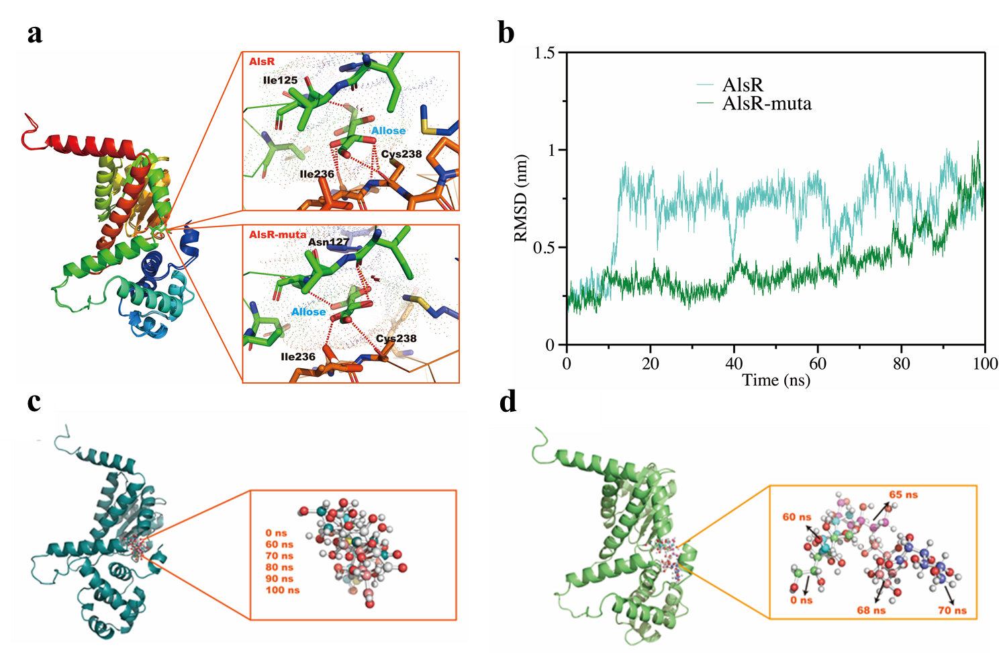

Download Report
Directed evolution of the alsR transcription factor to construct a D-allose biosensor
Chenxi Lu, Mengyu Li, Jie Zhang, Yuting Lu, Lin Li, Ying Zhang, Yufan Zhou, Yuan Fang, Yi Cao, Yongye Wu, Jiaqi Zhang, Zeyu Yan, Gongrui Meng, Rui Long, Li Yang, Wei Liu*, Yang Sun, Liying Zhu, Ling Jiang*
*-Corresponding authors contributed equally
Abstract
D-allose is a rare monosaccharide that is infrequently found in the natural environment. Being 80% sweeter than sucrose, D-allose is characterized by its extremely low caloric content and non-toxic properties, positioning it as an ideal substitute for sucrose in various food products. Its unique health benefits and physiological functions have been evidenced in diverse fields, including food systems, clinical treatments, and healthcare. However, its chemical synthesis poses significant challenges. In recent years, the biotechnological production of D-allose has emerged as a prominent area of research. This study presented a redesigned genetically encoded biosensor based on a D-allose regulatory gene for real-time monitoring of D-allose levels. Directed evolution of the transcriptional factor alsR gene yielded mutants with enhanced affinity for D-allose and improved detection sensitivity. The reconstructed biosensor was effectively utilized to detect intracellular D-allose synthesis, offering a potential selection tool for the directed evolution of enzymes associated with D-allose synthesis.
Key words: biosensor, D-allose, transcriptional factor
Introduction
The International Society of Rare Sugars (ISRS) defines the eponymous "rare sugars" whose derivatives are monosaccharides that are nearly nonexistent in nature. Despite their extremely low natural abundance, rare sugars exhibit various known biological functions and possess significant developmental potential in the synthesis, cosmetics, pharmaceuticals, food, and flavor industries[1]. D-allose is an important rare sugar, 80% sweeter than sucrose, and it is a super-low-calorie and ideal substitute for table sugar[2]. Although it is rarely found in nature, D-allose has garnered considerable research interest in recent years due to its numerous pharmacological activities, including anticancer, antitumor, anti-inflammatory, antioxidant, antihypertensive, cryoprotective, and immunosuppressive properties. D-allose inhibits the proliferation of cancer cells to prevent carcinogenesis, and in combination with radiotherapy, it has been proven to be an effective cancer treatment[3-5]. As an antioxidant, it can prevent ROS-mediated oxidative damage and reduce the generation of free radicals, thereby delaying deterioration. D-allose also protects against ischemia-reperfusion injury, decreases neutrophil production, and reduces platelet count by acting as an anti-inflammatory agent[6-7]. Furthermore, D-allose exhibits cryoprotective functions during freezing that are comparable to those of trehalose, and as an immunosuppressant, it can enhance the survival rate of allogeneic transplants and reduce tissue damage[8]. Therefore, D-allose has emerged as a novel functional food nutrient enhancer[9]. Unfortunately, most rare sugars, including D-allose, are prohibitively expensive, and their limited natural availability may impede their industrial potential.
The rapid advancement of synthetic biology has facilitated the biosynthesis of D-allose. However, challenges remain, including the low activity and stability of the enzymes, as well as the low productivity and yield of strains involved in D-allose synthesis[10]. To enhance the performance of enzymes for D-allose production, directed evolution presents a promising strategy. However, there is currently a lack of high-throughput selection methods specifically for D-allose. Genetically encoded biosensors offer the capability to detect fluctuations in metabolite concentrations both intracellularly and extracellularly, as well as in the surrounding environment[11]. These biosensors can generate measurable signal outputs or modulate gene expression levels within the metabolic pathway, providing a cost-effective, straightforward, and reproducible approach to monitoring and optimizing biosynthetic processes[12-13].
In this study, we developed a D-allose detection biosensor system utilizing the specific D-allose-responsive transcriptional regulator alsR in Escherichia coli to dynamically monitor D-allose levels. Further directed evolution of alsR yielded a biosensor with enhanced sensitivity, thereby providing a potential selection tool for the directed evolution of enzymes related to D-allose synthesis.
Results
Design of a biosensor for D-allose
E. coli K-12 can utilize D-allose as its sole carbon source. The operon responsible for D-allose metabolism is located at 92.8 minutes on the E. coli chromosome map and consists of six genes, alsRBACEK, which are transcriptionally induced by D-allose and negatively regulated by alsR (Figure 1). The alsBAC genes are involved in the translocation of D-allose, AlsE is the putative D-allose-6-phosphate 3-epimerase, and AlsK is the putative D-allose kinase. Previous studies have indicated that the region between the rpiB and alsR genes is predicted to function as a bidirectional promoter, and the transcription of the rpiB gene (encoding the allose-6-phosphate 3-epimerase) is similarly induced by D-allose, with suppression mediated by the alsR negative feedback loop[14].

E. coli BL21(DE3), a derivative of the K-12 strain, contains the als operon on its genome and thus harbors a natural alsR expression frame. We cloned the promoter region between the rpiB and alsR genes and ligated the fluorescent protein sfGFP to the promoter in the rpiB direction. This construct was then cloned into the pCDFDuet-1 vector, resulting in the recombinant plasmid pCDFDuet-1-PalsI-sfGFP. After transfecting this plasmid into BL21(DE3), the resulting recombinant strain E. coli BL21(DE3)/pCDFDuet-1-PalsI-sfGFP exhibited green fluorescence on LB plates without the addition of D-allose. We hypothesized that a single copy of the alsR expression frame on the E. coli BL21(DE3) genome might not fully repress sfGFP expression from the multicopy plasmid. Therefore, we attempted to overexpress alsR on the plasmid to enhance its repression.
We further cloned the bidirectional promoter sequence along with the alsR gene into the pETDuet-1 plasmid, creating the recombinant plasmid pETDuet-1-nativeP-alsR. Both pETDuet-1-nativeP-alsR and pCDFDuet-1-PalsI-sfGFP were simultaneously introduced into BL21(DE3), resulting in the recombinant strain E. coli BL21(DE3)/pCDFDuet-1-PalsI-sfGFP/pETDuet-1-nativeP-alsR. At this stage, we observed that the strain appeared white on LB plates in the absence of D-allose, indicating successful repression of sfGFP expression. The fluorescence dose-response behavior of E. coli BL21(DE3)/pCDFDuet-1-PalsI-sfGFP/pETDuet-1-nativeP-alsR was further investigated using D-allose as the input. Different concentrations of D-allose were added to assess its effect on sfGFP expression. We observed that in the dual-plasmid sensor system, the fluorescence signal increased progressively with higher concentrations of D-allose, showing a strong positive correlation between fluorescence intensity and D-allose concentration (Figure 2). This result confirmed that the biosensor for D-allose was successfully constructed.
Although the dual plasmid system of pCDFDuet-1-PalsI-sfGFP/pETDuet-1-nativeP-alsR successfully constructed the D-allose biosensor, the dual plasmid posed a significant burden on the cells. To address this, we aimed to express both alsR and sfGFP modules on a single plasmid by leveraging the bidirectional promoter. We cloned the alsR gene, bidirectional promoter, and sfGFP into the pCDFDuet-1 plasmid vector, creating the recombinant plasmid pCDFDuet-1-alsR-P-sfGFP. This plasmid was transfected into BL21(DE3), resulting in the recombinant strain E. coli BL21(DE3)/pCDFDuet-1-alsR-P-sfGFP, where the bidirectional promoter simultaneously initiates the expression of the transcriptional regulator alsR and the reporter gene sfGFP (Figure 3).

Further, the fluorescence dose-response behavior of E. coli BL21(DE3)/pCDFDuet-1-alsR-P-sfGFP was investigated using D-allose as the input, with the results shown in Fig. 4. As the D-allose concentration increased, the fluorescence signal readings of the bacterial culture exhibited a graded intensification, indicating a strong positive correlation between fluorescence intensity and D-allose concentration.
Directed evolution of alsR
Given that the single plasmid biosensors described above were not sufficiently sensitive to D-allose, we initiated directed evolution of the transcription factor alsR in an effort to enhance the biosensor's sensitivity to D-allose. Random mutant libraries were generated using an error-prone PCR method. The alsR gene was randomly mutated and self-selected by the biosensor using a microplate reader (Figure 5).

Approximately 200 mutants displaying green coloration on the LB plates were selected and cultured, and their fluorescence was measured using a microplate reader. Around 10 mutants exhibited higher fluorescence levels. As shown in Figure 6, the M2 mutant demonstrated the highest fluorescence intensity. Gene sequencing was performed to identify its mutation sites, and the results are shown in Figure 7. The alsR repressor protein in M2 mutant had mutations at the following positions: Glu25, Phe73, Thr83, Val93, Asp106, Phe264, Asn279, and Gln281.

To investigate the underlying mechanism, modeling and docking analyses of the mutant M2 and wild-type alsR proteins were performed. As shown in Figure 8a, it was observed that in the wild-type alsR, residues Ile125, Ile236, and Cys238 formed five hydrogen bonds with D-allose. In contrast, the mutant alsR-muta complex (with mutations) involved Asn127, Ile236, and Cys238 forming six hydrogen bonds with D-allose. This increase in hydrogen bonding indicates a stronger affinity between the mutant alsR-muta and D-allose, suggesting that the mutations improved the binding efficiency and overall sensitivity of the biosensor to D-allose.
Subsequently, molecular dynamics simulations of the alsR-allose and alsR-muta-allose complexes were conducted for 100 ns (Figure 8b). The results indicated that the root mean square deviation (RMSD) of the wild-type alsR was approximately 0.75 nm. Although the RMSD exhibited some fluctuations, it ultimately converged, suggesting relative stability. In contrast, the mutant alsR-muta displayed an RMSD of about 0.3 nm during the first 0-50 ns, indicating greater stability compared to the wild type. However, from 50 ns onwards, the RMSD began to increase, reaching approximately 0.8 nm, which signifies that the alsR-muta structure experienced a sudden loss of stability at that point.
During the 100 ns simulation, the binding interactions of alsR-allose and alsR-muta-allose were observed. It was found that both alsR and D-allose maintained a stable binding conformation throughout the simulation period, with no significant change in the spatial position of D-allose in the wild-type complex. In contrast, for alsR-muta, between 60-70 ns, the affinity between D-allose and alsR-muta decreased, leading to the exclusion of allose from the binding site of alsR-muta. This observation suggests that the structural stability of the mutant may have been compromised, impacting its ability to retain D-allose.
In summary, the enhanced induction observed in the mutant alsR can be attributed to two key phases: initially, there is an increase in affinity between alsR-muta and D-allose, resulting in a stable conformation. However, in the later stage, this affinity decreases abruptly, leading to the "squeezed out" of D-allose from the binding site. This allows the D-allose released from alsR-muta to be available for subsequent rounds of induction, thereby increasing induction efficiency. Consequently, high induction efficiency can be achieved even at lower concentrations of D-allose.

Specificity analysis of the D-allose biosensor
Currently, the enzymatic synthesis of D-allose primarily involves a three-step biotransformation reaction. The first step entails the conversion of D-glucose to D-fructose, catalyzed by xylose isomerase. In the second step, D-tagatose-3-episomerase or D-allulose-3-episomerase facilitates the isomerization at the C3 position of D-fructose to produce D-allulose. Finally, D-allulose is converted to D-allose under the catalysis of aldose isomerase[15].
To assess the specificity of the biosensor, we investigated the effects of different concentrations of glucose, fructose, and D-allulose on the fluorescence intensity of the biosensor. The results, shown in Figure 9, indicated that the fluorescence changes were minimal at varying concentrations of glucose, fructose, and D-allulose. As for D-allose, the fluorescence intensity exhibited a dose-dependent effect with increasing D-allose concentration (0-20 mM). This suggests that the constructed biosensor exhibits good specificity for D-allose.

Application of intracellular D-allose synthesis monitoring
To evaluate the practical application of the biosensor, we selected the intracellular reaction catalyzed by ribose 5-phosphate isomerase (RpiB) for the synthesis of D-allose from allulose as a case study. We constructed an RpiB-expressing strain, E. coli BL21(DE3)/pET28a-rpiB, and introduced the mutated biosensor plasmid pCDFDuet-1-alsR*-P-sfGFP. By adding different concentrations of allulose, we assessed the fluorescence response of the biosensor. As shown in Figure 10, the fluorescence signal readings intensified with increasing concentrations of D-allulose (0-250 mM) in strains containing the biosensor, demonstrating its potential as a high-throughput selection tool for the directed evolution of enzymes associated with D-allose synthesis.
Discussion
The development of a biosensor system for detecting D-allose using the transcriptional regulator alsR in E. coli has shown promising results in enhancing the ability to monitor D-allose concentrations dynamically. This system is an important step forward in addressing the challenges associated with the production of D-allose, which have limited availability due to natural scarcity and high production costs. By facilitating the selection of mutated enzymes involved in D-allose synthesis through directed evolution, this biosensor system offers a promising solution for improving enzyme performance.
In this study, the initial biosensor design based on a dual plasmid system successfully demonstrated the potential for detecting D-allose by correlating fluorescence intensity with the concentration of D-allose. However, the dual plasmid setup imposed a significant burden on the cells, reducing its long-term viability and scalability. This issue was effectively addressed by expressing both the transcriptional regulator alsR and the reporter gene sfGFP on a single plasmid, simplifying the system and reducing the metabolic load on E. coli.
The directed evolution of alsR was a crucial step in improving the sensitivity of the biosensor to D-allose. Random mutagenesis of the alsR gene yielded several mutants with enhanced fluorescence responses, indicating a higher sensitivity to D-allose. Among the mutants, the M2 variant stood out, showing significantly stronger fluorescence intensity compared to the wild-type alsR. Structural analyses through molecular modeling and docking revealed that the M2 mutant formed additional hydrogen bonds with D-allose, leading to stronger binding affinity. This improved interaction was likely responsible for the enhanced sensitivity of the M2 mutant biosensor. Interestingly, the molecular dynamics simulations further illustrated the stability and performance differences between the wild-type alsR and the M2 mutant. While the wild-type alsR maintained a relatively stable binding conformation with D-allose throughout the simulation, the M2 mutant exhibited a more dynamic interaction. In the early phase of the simulation, the mutant showed stronger stability, but later in the simulation, the binding interaction weakened, causing D-allose to be released from the binding site. This release may have contributed to the biosensor’s ability to induce higher fluorescence responses at lower D-allose concentrations, making it a more efficient tool for detecting small quantities of the sugar.
Specificity analysis confirmed that the biosensor system exhibited minimal cross-reactivity with other sugars such as glucose, fructose, and D-allulose, further validating its utility as a precise tool for detecting D-allose in complex biological systems. This specificity is particularly important in industrial applications where other sugars may be present in significant amounts, and accurate detection of D-allose is critical for process optimization.
Finally, the application of the biosensor for monitoring intracellular D-allose synthesis provides a valuable case study for its practical utility. The ability to track D-allose production in real-time using a biosensor linked to ribose 5-phosphate isomerase (RpiB) activity demonstrates the system’s potential as a high-throughput selection tool. This could be particularly useful in the directed evolution of enzymes related to D-allose synthesis, including RpiB, allowing for more efficient screening of variants and ultimately improving yields.
In conclusion, this study presents a successful biosensor system for D-allose detection for the first time. The enhanced sensitivity achieved through directed evolution, coupled with the system’s specificity and practical utility, marks a significant advancement in the biosynthesis and monitoring of D-allose.
Materials and Methods
Strains and Plasmids
All strains and plasmids used in this study are listed in Supplementary Table S1. E. coli DH5α (Vazyme, Nanjing, China) was used for recombinant DNA manipulation. E. coli BL21(DE3) was used as the host for biosensor validation. All oligonucleotide primers used to amplify DNA fragments are shown in Tables S2, was used to obtain the linearized vector and DNA fragment by PCR reaction. DNA fragments assembly were performed by ClonExpress II One Step Cloning Kit (Vazyme, Nanjing, China).
Chemicals and Reagents
Luria Broth (LB) medium, containing 10 g/L tryptone, 5 g/L yeast extract and 10 g/L NaCl, was used for strain cultivation in shake flask and plate screening. When necessary, appropriate antibiotics (50 μg/mL streptomycin, 50 μg/mL spectinomycin, 50 μg/mL kanamycin) were supplemented. D-allose, glucose, frucose, D-allulose were purchased from Sigma-Aldrich (Shanghai, China). The enzymes and kits used for genetic manipulation were supplied by Vazyme Biotech Co. Ltd. Company (Nanjing, China).
Characterization of biosensor
To measure the fluorescence of sfGFP, recombinant E. coli were cultured in 30 mL LB medium and induced by different concentration of D-allose, D-allulose, glucose or fructose for 18 h at 30°C and 200 rpm, then the cultures were collected and washed twice by PBS (phosphate buffer saline) buffer. OD600 and fluorescence intensity values were measured by a Varioskan Flash Multimode Reader (Thermo Scientific, USA). The excitation of EGFP was set at 485 nm as well as emission at 510 nm. Fluorescence intensities normalized against culture OD600 were used to indicate the expression level of sfGFP.
Error-Prone PCR of alsR
A random mutant library was constructed using error-prone PCR to introduce mutations into the alsR gene, aiming to improve the sensitivity of the biosensor. The error-prone PCR reaction was performed using the error-prone PCR kit (Vazyme Biotech Co. Ltd., Nanjing, China) in a total volume of 50 μL, including 25 μL Mutazym mixture, 2 μL of upstream and downstream primers, ddH2O, manganese chloride (0.3-0.5 mM), 10 ng of wild-type template DNA. Meanwhile, the linearized vector and the above fragments were assembled by ClonExpress II One Step Cloning Kit (Vazyme Biotech Co. Ltd., Nanjing, China).
96-well plate screening
The mutant library was subsequently transformed into E. coli BL21 (DE3), plated on LB agar, and incubated at 37°C for 16 h. Single colonies were then selected, with one set cultured without D-allose and another set with 20 mM D-allose. These cultures were incubated in 96-well deep plates at 30°C and 650 rpm for 16 h. Following incubation, the samples were processed, and the fluorescence values were measured using a Varioskan Flash Multimode Reader (Thermo Scientific, USA) at an excitation wavelength of 485 nm and an emission wavelength of 510 nm. Fluorescence intensities normalized against culture OD600 were used to indicate the expression level of sfGFP.
Protein-ligand docking and molecular dynamics simulations
The protein-ligand docking between alsR and D-allose using AutoDock, the alsR-allose complex structure was obtained. Based on alsR-allose complex, corresponding mutation sites in alsR-muta are replaced using PyMol to obtain the alsR-muta-allose structure. Next, the force field parameters of D-allose in the complex were obtained using CGenFF (https://cgenff.com), and topology files for alsR-allose or alsR-muta-allose complex was constructed. Molecular dynamics (MD) simulations are conducted with Gromacs 2024.2, where alsR-allose or alsR-muta-allose was solvated with SPC water model and centered in a cubic box, with Na+ or Cl- randomly replacing water molecules to balance the charge. Subsequently, energy minimization was carried out, followed by 1 ns (500,000 steps) of NVT equilibration at 300 K, and 1 ns of NPT equilibration (1 bar). Finally, MD simulations were conducted for 100 ns (5,000,000 steps) at 300 K. After MD simulations, periodic boundary conditions were applied, and the structure of the alsR-allose or alsR-muta-allose complex was output every 1 ns for analysis using PyMol, along with RMSD calculations for the backbones of alsR and alsR-muta.
References
-
K. Izumori, Izumoring: a strategy for bioproduction of all hexoses. Journal of Biotechnology 124, 717-722, (2006).
DOI: http://doi.org/10.1016/j.jbiotec.2006.04.016 -
A.D. Mooradian, M. Smith, M. Tokuda, The role of artificial and natural sweeteners in reducing the consumption of table sugar: a narrative review. Clinical Nutrition ESPEN 18, 1-8, (2017).
DOI: http://doi.org/10.1016/j.clnesp.2017.01.004 -
H. Hoshikawa, K. Indo, T. Mori, et al., Enhancement of the radiation effects by D-allose in head and neck cancer cells. Cancer Letters 306, 60-66, (2011).
DOI: https://doi.org/10.1016/j.canlet.2011.02.032 -
N. Naha, H.Y. Lee, M.J. Jo, et al., Rare sugar D-allose induces programmed cell death in hormone refractory prostate cancer cells[J]. Apoptosis 13, 1121-1134, (2008).
DOI: https://doi.org/10.1007/s10495-008-0232-7 -
C. Noguchi, K. Kamitori, A. Hossain, et al., D-Allose inhibits cancer cell growth by reducing GLUT1 expression. The Tohoku Journal of Experimental Medicine 238, 131-141(2016).
DOI: https://doi.org/10.1620/tjem.238.131 -
D. Gao, N. Kawai, T. Tamiya, The anti-inflammatory effects of D allose contribute to attenuation of cerebral ischemia–reperfusion injury. Medical Hypotheses 76, 911-913 (2011).
DOI: https://doi.org/10.1016/j.mehy.2011.03.007 -
T. Huang, D. Gao, Y. Hei, et al., D-Allose protects the blood brain barrier through PPAR gamma-mediated anti-inflammatory pathway in the mice model of ischemia reperfusion injury. Brain Research 1642, 478-486, (2016).
DOI: https://doi.org/10.1016/j.brainres.2016.04.038 -
H. Sakoguchi, A. Yoshihara, K. Izumori, et al., Screening of biologically active monosaccharides: growth inhibitory effects of D-allose, D-talose, and L-idose against the nematode Caenorhabditis elegans. Bioscience, Biotechnology, and Biochemistry 80, 1058-1061(2016).
DOI: https://doi.org/10.1007/s00253-018-8916-6 -
Z. Chen, J. Chen, W. Zhang, et al., Recent research on the physiological functions, applications, and biotechnological production of D-allose. Applied Microbiology and Biotechnology 102, 4269–4278 (2018).
DOI: https://doi.org/10.1007/s00253-018-8916-6 -
Y.R. Lim, D-K Oh, Microbial metabolism and biotechnological production of D-allose, Applied Microbiology and Biotechnology 91, 229-235, (2011). DOI: http://doi.org/10.1007/s00253-011-3370-8
-
N. Gupta, V. Renugopalakrishnan, D. Liepmann, et al., Cell-based biosensors: recent trends, challenges and future perspectives. Biosensors and Bioelectronics 141, 11143, (2019).
DOI: https://doi.org/10.1016/j.bios.2019.111435 -
Y. Boada, A. Vignoni, J. Pico, et al., Extended metabolic biosensor design for dynamic pathway regulation of cell factories. iScience 23, 101305, (2020).
DOI: https://doi.org/10.1016/j.isci.2020.101305 -
W.W. Yu, X. H. Xu, K. Jin, et al., Genetically encoded biosensors for microbial synthetic biology: from conceptual frameworks to practical applications. Biotechnology Advances 62, 108077(2023).
DOI: https://doi.org/10.1016/j.biotechadv.2022.108077 -
T.S. Poulsen, Y.Y. Chang, B. Hovejensen, D-allose catabolism of Escherichia coli: Involvement of alsI and regulation of als regulon expression by allose and ribose, Journal of Bacteriology, 181, 7126-7130(1999).
DOI: http://doi.org/10.1128/JB.181.22.7126-7130.1999 -
K. Morimoto, T. Suzuki, H. Ikeda, One-pot multi-step transformation of D-allose from d-fructose using a co-immobilized biocatalytic system, Journal of General and Applied Microbiology, 68, 1-9, (2022).
DOI: http://doi.org/10.1128/JB.181.22.7126-7130.1999
Acknowledgments
We are grateful to the support of Nanjing Tech University. We sincerely thank associate professor Wei Liu and professor Ling Jiang for providing materials and their advice.
Author Contributions
M.Y.L. conceived and designed the project with conceptual and practical guidance from W.L. Y.S., L.Y.Z., L.J.; and C.X.L., M.Y.L., Y.T.L., L.L., Y.Z., Y.F., Y.C., performed experiments with support from R.L., L.Y.; and C.X.L., M.Y.L. wrote the article with contributions from Y.F.Z., J.Q.Z.; and J.Z., G.R.M., Y.Y.W. Z.Y.Y. accounted for the computational experiments. W.L. and L.J. agree to serve as corresponding authors and ensures communication.
Competing interests
The authors declare no competing interests.
Supplementary information
Supplementary information is available for this paper in the online version.